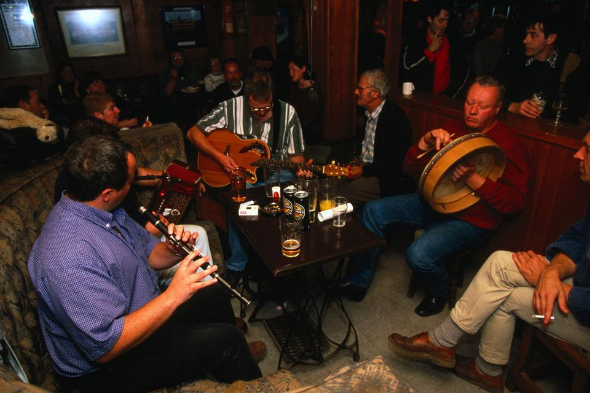

Culture
Food
Ireland's cuisine is influenced by the crops grown and animals farmed in its temperate climate. In the 16th century, the potato was introduced which greatly influenced the country's cuisine and it is now often associated with Ireland. Irish stew was traditionally made with mutton (stewed until tender), onions, potatoes and carrots all in one pot. Boxty is another irish dish containing potato. It is made by mixing grated, raw potato with mashed potato and then added to a batter before being fried on a pan. A common fish dish in Ireland is smoked salmon. Two popular breads in Ireland are barmbarack (with sultanas and raisins in it) and soda bread which is free of yeast. Other traditional Irish dishes include Shepherd's Pie, Coddle and bacon with cabbage. Guinness is avdry stout known around the world that originated in Dublin, in the brewery of Arthur Guinness.
Sports
Hurling, Gaelic football and camogie are amateur sports under the Gaelic Athletic Association. The GAA was founded in 1884 to promote and develop national sports. Hurling is a field game played with a stick called a hurley and a ball called a sliotar. Players are required to wear helmets while playing. The ball can be hit into the opposing teams net for a goal, worth three points, or over the bar between the posts for one point. Camogie is very similar to hurling except it is played exclusinely by women. Gaelic football is a filed game played with a round ball in which players can use their hands to pick up the ball. The scoring system is the same as in hurling. The GAA organises the All-Ireland Championships each year for both -aelic and hurling in which each of the 32 counties compete for a trophy. Rugby is also a popular sport in Ireland, among many others like football and athletics. There are two sports stadiums in Dublin city. Croke Park is for GAA matches while the Aviva stadium is for rugby and football. On an international level, Ireland has been represented in the Olympics since 1924 and currently has won 31 medals in total.
Art
The earliest known Irish graphic art is Neolithic carvings found at sites such as Newgrange.Religious carvings and illuminated manuscripts of the medieval period have also been found. Illuminated manuscripts are manuscripts in which the text is accompanied by decoration like borders and drawings. Painting became a popular form of art in the 19th and 20th centuries. Well known Irish artists include John Butler Yeats, Jack Yeats and William Orpen. Many great pieces of literature have also come from Irish people such as William Butler Yeats, James Joyce and Seamus Heaney in more modern times.
Music
Irish traditional, or trad for short, music is a genre of folk music. The most commonly used instruments in this genre of music in history are the fiddle, tin whistle, flute and the Uilleann pipes. More recently, the accordion, concertina, guitar and banjo have been included. The bodhrán is an Irish drum made from goatskin which is held by hand and played using either the other hand or a stick called a tipper. Irish traditional music sessions are informal gatherings at which trad music is played. A céilí is an Irish social gathering where Gaelic folk music is played. People usually dance in the form of set dances or couple dances.
